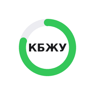

<!doctype html>
<html lang="ru">
<head>
<meta charset="utf-8">
<meta name="viewport" content="width=device-width,initial-scale=1,viewport-fit=cover">
<meta name="theme-color" content="#f2f2f7" media="(prefers-color-scheme: light)">
<meta name="theme-color" content="#000000" media="(prefers-color-scheme: dark)">
<meta name="color-scheme" content="light dark">
<title>КБЖУ</title>
<link rel="manifest" href="manifest.webmanifest">
<link rel="icon" href="icon-192.png">
<link rel="apple-touch-icon" href="icon-192.png">
<style>
:root{--bg:#f2f2f7;--card:#fff;--card2:#f2f2f7;--tx:#1c1c1e;--mu:#8e8e93;--line:#e5e5ea;--track:#ececf1;
--ac:#34c759;--act:#248a3d;--acbg:rgba(52,199,89,.13);--kc:#34c759;--cp:#0a84ff;--cf:#ff9f0a;--cc:#af52de;--sug:#ff2d55;--fib:#30b0c7;
--bad:#ff3b30;--warn:#c77700;--okt:#248a3d;--modt:#a05a00;--limt:#d70015;
--sh:0 1px 2px rgba(0,0,0,.04),0 6px 20px rgba(0,0,0,.05);--tabbg:rgba(249,249,251,.86)}
@media (prefers-color-scheme:dark){:root{--bg:#000;--card:#1c1c1e;--card2:#2c2c2e;--tx:#f5f5f7;--mu:#98989f;--line:#38383a;--track:#2c2c2e;
--ac:#30d158;--act:#30d158;--acbg:rgba(48,209,88,.16);--kc:#30d158;--cp:#0a84ff;--cf:#ff9f0a;--cc:#bf5af2;--sug:#ff375f;--fib:#40c8e0;
--bad:#ff453a;--warn:#ffd60a;--okt:#30d158;--modt:#ffd60a;--limt:#ff6961;--sh:none;--tabbg:rgba(22,22,24,.86)}}
*{box-sizing:border-box}
html,body{margin:0;background:var(--bg);color:var(--tx);font:16px/1.38 -apple-system,BlinkMacSystemFont,"SF Pro Text","Segoe UI",Roboto,sans-serif;-webkit-tap-highlight-color:transparent;-webkit-font-smoothing:antialiased}
main{padding:calc(14px + env(safe-area-inset-top)) 16px 110px;max-width:640px;margin:0 auto}
h2{font-size:22px;font-weight:700;margin:22px 0 8px;letter-spacing:-.3px}
p{margin:6px 0}
.card{background:var(--card);border-radius:20px;padding:16px;margin:12px 0;box-shadow:var(--sh)}
.card.in{background:var(--card2);box-shadow:none}
button,.btn{font:inherit;font-size:15px;font-weight:600;color:var(--act);background:var(--acbg);border:0;border-radius:12px;padding:10px 14px;cursor:pointer;display:inline-flex;align-items:center;gap:6px;justify-content:center}
button:active,.btn:active{opacity:.7}
button.pri{background:var(--ac);color:#fff}
button.danger{color:var(--bad);background:rgba(255,59,48,.1)}
button:disabled{opacity:.45}
.wide{width:100%;margin-top:12px;padding:14px;font-size:16px}
input,select,textarea{font:inherit;color:var(--tx);background:var(--card2);border:1px solid transparent;border-radius:12px;padding:11px 12px;width:100%;outline:none;-webkit-appearance:none;appearance:none}
input:focus,select:focus,textarea:focus{border-color:var(--ac)}
select{background-image:linear-gradient(45deg,transparent 50%,var(--mu) 50%),linear-gradient(135deg,var(--mu) 50%,transparent 50%);background-position:calc(100% - 18px) 50%,calc(100% - 13px) 50%;background-size:5px 5px;background-repeat:no-repeat;padding-right:32px}
.card.in input,.card.in select,.card.in textarea{background:var(--card)}
textarea{resize:vertical}
label{display:block;font-size:13px;color:var(--mu);margin:12px 0 5px;font-weight:500}
.row{display:flex;gap:8px;align-items:center}
.sp{justify-content:space-between}
.gap{gap:8px;flex-wrap:wrap;margin-top:10px}
.grow{flex:1;min-width:0}
.w80{width:80px;flex:none}
.mu{color:var(--mu)}
.sm{font-size:13px}
.mt{margin-top:10px}
.right{text-align:right}
.bad{color:var(--bad)}
.okc{color:var(--okt)}
.warn{color:var(--warn)}
/* шапка дня */
.top{display:flex;justify-content:space-between;align-items:flex-end;margin:4px 2px 6px}
.title{font-size:32px;font-weight:800;letter-spacing:-.6px;line-height:1.1}
.nav{width:38px;height:38px;border-radius:50%;padding:0;font-size:22px;background:var(--card);color:var(--tx);box-shadow:var(--sh)}
/* главное кольцо */
.hero{padding:18px 14px 16px}
.hero-top{display:flex;align-items:center;justify-content:space-between}
.side{width:72px;text-align:center}
.side .v{font-size:20px;font-weight:700}
.ring-wrap{position:relative;width:176px;height:176px;flex:none}
.ring-wrap svg{display:block}
.ring-center{position:absolute;inset:0;display:flex;flex-direction:column;align-items:center;justify-content:center;text-align:center}
.big{font-size:40px;font-weight:800;line-height:1;letter-spacing:-1px}
.macros{display:flex;justify-content:space-around;margin-top:16px}
.mac{text-align:center;width:96px}
.mac .rw{position:relative;width:62px;height:62px;margin:0 auto}
.mac .rw div{position:absolute;inset:0;display:flex;align-items:center;justify-content:center;font-weight:700;font-size:15px}
.mac b{display:block;font-size:13px;margin-top:6px}
.grid2{display:grid;grid-template-columns:1fr 1fr;gap:12px 18px;margin-top:16px}
.m{font-size:13px}
.bar{height:7px;background:var(--track);border-radius:4px;overflow:hidden;margin-top:5px}
.bar i{display:block;height:100%;border-radius:4px;background:var(--ac);transition:width .4s}
.bar i.over{background:var(--bad)!important}
.alc{margin-top:14px;padding:10px 12px;border-radius:12px;background:rgba(255,59,48,.1);color:var(--bad);font-size:14px}
/* чипы */
.chips{display:flex;gap:8px;overflow-x:auto;padding:4px 2px 6px;margin:0 -2px;scrollbar-width:none}
.chips::-webkit-scrollbar{display:none}
.chip{white-space:nowrap;border-radius:20px;padding:8px 14px;font-size:14px;flex:none;background:var(--card);color:var(--tx);box-shadow:var(--sh);font-weight:500}
.card.in .chip,.box .chip{background:var(--card2);box-shadow:none}
.hint{font-size:13px;color:var(--mu);margin:2px 4px}
/* приёмы пищи */
.meal{padding:14px 16px}
.meal-h{display:flex;align-items:center;gap:12px}
.mi{width:42px;height:42px;border-radius:12px;background:var(--card2);display:flex;align-items:center;justify-content:center;font-size:22px;flex:none}
.meal-h b{font-size:17px}
.addc{width:36px;height:36px;border-radius:50%;padding:0;font-size:24px;font-weight:400;flex:none}
.link{background:none;padding:8px 0 0;font-size:14px}
.ent{display:flex;justify-content:space-between;align-items:center;gap:10px;padding:10px 0;border-top:1px solid var(--line);cursor:pointer}
.meal .ent:first-of-type{margin-top:10px}
.ent>div:first-child{flex:1;min-width:0}
.ent .k{font-weight:600}
.card.ent{border-top:0;padding:14px 16px}
.list{margin-top:6px}
.list .it{padding:11px 4px;border-bottom:1px solid var(--line);cursor:pointer}
.list .it:active{opacity:.6}
.star{font-size:22px;color:var(--line);background:none;padding:4px 8px}
.star.on{color:#ffcc00}
.seg{display:flex;background:var(--card2);border-radius:11px;padding:3px;margin-top:12px}
.seg button{flex:1;background:none;color:var(--tx);font-weight:500;padding:8px;border-radius:9px}
.seg button.on{background:var(--card);box-shadow:0 1px 4px rgba(0,0,0,.12);font-weight:600}
/* таббар */
.tabs{position:fixed;bottom:0;left:0;right:0;display:flex;background:var(--tabbg);backdrop-filter:saturate(180%) blur(20px);-webkit-backdrop-filter:saturate(180%) blur(20px);border-top:.5px solid var(--line);padding-bottom:env(safe-area-inset-bottom);z-index:5}
.tabs button{flex:1;background:none;border-radius:0;padding:7px 0 9px;font-size:11px;font-weight:500;color:var(--mu);flex-direction:column;gap:2px}
.tabs button span{font-size:21px;line-height:1.1;filter:grayscale(1);opacity:.55}
.tabs button.on{color:var(--act)}
.tabs button.on span{filter:none;opacity:1}
.fab{position:fixed;right:18px;bottom:calc(76px + env(safe-area-inset-bottom));width:58px;height:58px;border-radius:50%;background:var(--ac);color:#fff;font-size:32px;font-weight:300;padding:0;box-shadow:0 6px 18px rgba(52,199,89,.45);z-index:6}
/* шторка */
.sheet{position:fixed;inset:0;background:rgba(0,0,0,.35);display:flex;align-items:flex-end;z-index:10;animation:fade .2s}
.sheet .box{background:var(--card);width:100%;max-width:640px;margin:0 auto;max-height:92vh;overflow:auto;border-radius:22px 22px 0 0;padding:8px 16px calc(22px + env(safe-area-inset-bottom));animation:up .25s ease-out}
.box:before{content:"";display:block;width:38px;height:5px;border-radius:3px;background:var(--line);margin:0 auto 10px}
.box .x{width:32px;height:32px;border-radius:50%;padding:0;background:var(--card2);color:var(--mu);font-size:15px}
@keyframes up{from{transform:translateY(40px);opacity:.5}}
@keyframes fade{from{opacity:0}}
.hidden{display:none!important}
.thumb{height:46px;border-radius:10px}
.drow{padding:10px 0;border-bottom:1px solid var(--line)}
.badge{display:inline-block;font-size:11.5px;font-weight:600;padding:2px 8px;border-radius:9px;margin-right:6px}
.b-ok{background:rgba(52,199,89,.15);color:var(--okt)}.b-mod{background:rgba(255,159,10,.17);color:var(--modt)}.b-lim{background:rgba(255,59,48,.13);color:var(--limt)}
#toast{position:fixed;left:50%;top:calc(14px + env(safe-area-inset-top));transform:translate(-50%,-20px);background:var(--tx);color:var(--bg);padding:10px 18px;border-radius:22px;font-size:14px;font-weight:500;opacity:0;transition:.25s;pointer-events:none;z-index:20;max-width:90vw;text-align:center}
#toast.show{opacity:1;transform:translate(-50%,0)}
canvas{width:100%;height:190px;display:block}
.prog{position:relative;height:10px;background:var(--track);border-radius:5px;margin:12px 0 6px}
.prog i{position:absolute;left:0;top:0;bottom:0;background:var(--ac);border-radius:5px}
.prog b{position:absolute;top:-3px;bottom:-3px;width:2px;background:var(--cf);border-radius:1px}
.kv{display:flex;justify-content:space-between;padding:5px 0}
.appicon{width:52px;height:52px;border-radius:13px;flex:none;box-shadow:0 1px 4px rgba(0,0,0,.15)}
.install b{font-size:17px}
.inst-x{background:none;color:var(--mu);padding:4px 6px;font-size:18px}
ul{margin:6px 0;padding-left:18px}
li{margin:4px 0}
</style>
</head>
<body>
<main id="view"></main>
<nav class="tabs" id="tabs"></nav>
<div id="sheet" class="sheet hidden" onclick="if(event.target===this)closeSheet()"><div class="box" id="sbox"></div></div>
<div id="toast"></div>

<script>
/* ===== Справочник: название;ккал;Б;Ж;У;клетчатка;доб.сахар;этанол;порция г — на 100 г ===== */
const BASE_RAW=`
Гречка сухая;313;12.6;3.3;62.1;10;0;0;60
Гречка варёная;98;3.4;0.6;20;2.7;0;0;200
Рис белый сухой;344;6.7;0.7;78.9;1;0;0;60
Рис белый варёный;130;2.7;0.3;28.2;0.4;0;0;180
Рис бурый варёный;112;2.3;0.8;23.5;1.8;0;0;180
Овсяные хлопья сухие;352;12.3;6.2;61.8;8;0;0;50
Овсянка на воде;88;3;1.7;15;1.6;0;0;250
Овсянка на молоке 2.5%;112;4.7;3.2;16.1;1.6;0;0;250
Булгур сухой;342;12.3;1.3;63;12.5;0;0;60
Булгур варёный;83;3.1;0.2;18.6;4.5;0;0;180
Пшено сухое;342;11.5;3.3;66.5;3.6;0;0;60
Пшённая каша на воде;90;3;0.7;17;1;0;0;250
Перловка варёная;123;2.3;0.4;28.2;3.8;0;0;180
Макароны сухие (твёрдые сорта);350;12;1.5;71;3;0;0;80
Макароны варёные;158;5.8;0.9;30.9;1.8;0;0;200
Кускус варёный;112;3.8;0.2;23.2;1.4;0;0;180
Чечевица сухая;352;24;1.5;53;11;0;0;60
Чечевица варёная;116;9;0.4;20;7.9;0;0;180
Нут варёный;164;8.9;2.6;27.4;7.6;0;0;150
Фасоль красная варёная;127;8.7;0.5;22.8;6.4;0;0;150
Фасоль консервированная;99;6.7;0.3;17.4;5;0;0;120
Горошек зелёный консервированный;58;3.6;0.2;9.8;4;0;0;80
Кукуруза консервированная;86;3.2;1.2;16;2;2;0;80
Картофель варёный;82;2;0.4;16.7;1.8;0;0;200
Картофель запечённый;93;2.5;0.1;21;2.2;0;0;200
Картофельное пюре (молоко, масло);106;2.5;4.2;14.7;1.5;0;0;200
Картофель жареный;192;2.8;9.5;23.4;2.1;0;0;200
Хлеб ржаной (бородинский);210;6.8;1.3;40.7;5.8;4;0;30
Хлеб пшеничный (батон);262;7.5;2.9;51.4;2.3;3;0;30
Хлеб цельнозерновой;247;13;3.4;41;7;4;0;30
Лаваш тонкий;277;9.1;1.2;56.2;2;0;0;60
Хлебцы цельнозерновые;300;10;2.5;57;13;0;0;10
Куриная грудка сырая;113;23.6;1.9;0;0;0;0;150
Куриная грудка варёная / запечённая;153;30;3.5;0;0;0;0;150
Куриное бедро без кожи сырое;121;20;4.1;0;0;0;0;150
Куриное бедро без кожи тушёное;180;25;8.5;0;0;0;0;150
Курица с кожей запечённая;229;23.3;14.7;0;0;0;0;150
Фарш куриный;143;17.4;8.1;0;0;0;0;100
Индейка филе сырое;110;23;1.5;0;0;0;0;150
Индейка филе тушёное;147;30;2;0;0;0;0;150
Говядина постная сырая;158;22.2;7.1;0;0;0;0;150
Говядина тушёная;232;16.8;18.3;0;0;0;0;150
Фарш говяжий;250;17;20;0;0;0;0;100
Фарш домашний (свинина+говядина);263;17;22;0;0;0;0;100
Свинина нежирная (вырезка) сырая;142;19.4;7.1;0;0;0;0;150
Свинина жирная (шея) сырая;267;16;22.6;0;0;0;0;150
Печень говяжья;127;17.9;3.7;5.3;0;0;0;100
Печень куриная;136;19.1;6.3;0.6;0;0;0;100
Сосиски молочные;266;11;23.9;1.6;0;0;0;50
Колбаса варёная (докторская);257;12.8;22.2;1.5;0;0;0;30
Колбаса сырокопчёная;473;24.8;41.5;0;0;0;0;20
Ветчина;270;14;24;1;0;0;0;30
Бекон;500;23;45;0;0;0;0;20
Пельмени;260;11;12;27;1;0;0;250
Минтай;72;15.9;0.9;0;0;0;0;150
Треска;78;17.8;0.7;0;0;0;0;150
Горбуша;140;20.5;6.5;0;0;0;0;150
Лосось / сёмга;202;20;13;0;0;0;0;150
Скумбрия;191;18;13.2;0;0;0;0;150
Сельдь солёная;217;19.8;15.4;0;0;0;0;50
Тунец консервированный в собств. соку;96;21;1;0;0;0;0;100
Креветки варёные;95;20;1.5;0;0;0;0;100
Крабовые палочки;73;6;1;10;0;3;0;100
Яйцо куриное (1 шт ≈ 55 г);157;12.7;10.9;0.7;0;0;0;55
Белок яичный;48;11;0.2;0.7;0;0;0;33
Омлет;160;10;12.5;2;0;0;0;150
Яичница на масле;200;13;15.5;0.8;0;0;0;110
Молоко 2.5%;52;2.8;2.5;4.7;0;0;0;200
Молоко 3.2%;59;2.9;3.2;4.7;0;0;0;200
Кефир 1%;40;3;1;4;0;0;0;250
Кефир 2.5%;50;2.9;2.5;4;0;0;0;250
Ряженка 4%;67;2.9;4;4.2;0;0;0;250
Творог 0–1%;75;16.5;0.5;1.3;0;0;0;150
Творог 5%;121;17.2;5;1.8;0;0;0;150
Творог 9%;159;16.7;9;2;0;0;0;150
Сметана 15%;158;2.6;15;3;0;0;0;20
Сметана 20%;206;2.8;20;3.2;0;0;0;20
Йогурт греческий 2%;73;10;2;3.6;0;0;0;150
Йогурт питьевой сладкий;90;3;2.5;13;0;8;0;250
Сыр твёрдый (российский);363;24.1;29.5;0.3;0;0;0;30
Сыр моцарелла;240;18;17.5;2;0;0;0;30
Брынза / фета;260;17.9;20.1;0.4;0;0;0;30
Сыр плавленый;257;16.8;20;2.4;0;0;0;30
Масло сливочное 82%;748;0.5;82.5;0.8;0;0;0;10
Сливки 10%;118;3;10;4;0;0;0;20
Масло подсолнечное (1 ст.л. ≈ 15 г);899;0;99.9;0;0;0;0;15
Масло оливковое;898;0;99.8;0;0;0;0;10
Майонез 67%;624;0.3;67;2.6;0;2;0;15
Кетчуп;93;1.8;1;22;0.3;16;0;20
Соевый соус;53;6;0;5.7;0.8;1;0;15
Огурец;15;0.8;0.1;2.8;0.5;0;0;120
Помидор;20;1.1;0.2;3.8;1.2;0;0;150
Капуста белокочанная;27;1.8;0.1;4.7;2;0;0;100
Капуста квашеная;19;0.9;0.1;3;2.9;0;0;100
Брокколи;34;2.8;0.4;4;2.6;0;0;150
Цветная капуста;30;2.5;0.3;4.2;2.1;0;0;150
Морковь;35;1.3;0.1;6.9;2.4;0;0;80
Свёкла варёная;44;1.7;0.2;8;2;0;0;100
Лук репчатый;41;1.4;0.2;8.2;1.7;0;0;50
Перец болгарский;26;1.3;0.1;5.3;1.9;0;0;150
Кабачок;24;0.6;0.3;4.6;1;0;0;200
Баклажан;24;1.2;0.1;4.5;2.5;0;0;200
Шпинат;23;2.9;0.4;2;2.2;0;0;50
Салат листовой;15;1.2;0.3;1.3;1.3;0;0;50
Зелень (укроп, петрушка);40;2.5;0.5;6.3;2.8;0;0;10
Тыква;26;1;0.1;4.4;0.5;0;0;200
Фасоль стручковая;31;1.8;0.2;4.3;2.7;0;0;150
Овощная смесь замороженная;40;2.4;0.3;7;3;0;0;200
Салат из свежих овощей с маслом;85;1;7;4;1.2;0;0;150
Яблоко;52;0.3;0.2;11.8;2.4;0;0;180
Банан;95;1.5;0.3;21;2.6;0;0;120
Апельсин;47;0.9;0.1;9.4;2.2;0;0;180
Мандарин;53;0.8;0.3;11.5;1.8;0;0;80
Груша;57;0.4;0.1;12;3.1;0;0;170
Виноград;69;0.7;0.2;16.2;0.9;0;0;150
Киви;61;1.1;0.5;10.1;3;0;0;75
Клубника;32;0.7;0.3;6.5;2;0;0;150
Черника;57;0.7;0.3;12;2.4;0;0;100
Хурма;70;0.8;0.2;15.3;3.6;0;0;200
Грейпфрут;42;0.8;0.1;10.7;1.6;0;0;250
Авокадо;160;2;14.7;1.8;6.7;0;0;100
Изюм;299;3.1;0.5;75;3.7;0;0;30
Курага;232;5.2;0.3;51;7.3;0;0;30
Грецкий орех;654;15.2;65.2;7;6.7;0;0;20
Миндаль;579;21.2;49.9;9.7;12.5;0;0;20
Арахис;567;25.8;49.2;7.6;8.5;0;0;20
Семечки подсолнечные;584;20.8;51.5;11.4;8.6;0;0;30
Арахисовая паста;588;25;50;16;6;5;0;15
Сахар (1 ч.л. ≈ 5 г);399;0;0;99.8;0;99.8;0;5
Мёд;304;0.3;0;82.4;0;82;0;10
Варенье;265;0.3;0.2;70;1;60;0;20
Шоколад молочный;535;7.6;29.7;59.4;3.4;51;0;25
Шоколад горький 70%;598;7.8;42.6;34;10.9;24;0;25
Печенье;417;7.5;11.8;74.4;2;25;0;15
Пряник;364;5.6;4.8;75;1.5;35;0;40
Конфеты шоколадные;500;4;25;65;2;50;0;12
Зефир;304;0.8;0.1;79.8;0;70;0;35
Мороженое пломбир;232;3.2;15;20.8;0;18;0;80
Торт бисквитный с кремом;380;5;18;50;1;35;0;100
Сок апельсиновый;45;0.7;0.2;10.4;0.2;8.4;0;250
Сок яблочный;46;0.1;0.1;11.3;0.2;10;0;250
Кола / сладкая газировка;42;0;0;10.6;0;10.6;0;330
Квас;27;0.2;0;5.2;0;4;0;500
Компот;60;0.2;0;15;0.3;12;0;250
Чай без сахара;1;0;0;0.3;0;0;0;250
Кофе чёрный без сахара;2;0.2;0;0.3;0;0;0;200
Капучино;40;2;2;3.4;0;0;0;250
Латте;45;2.4;2.2;3.6;0;0;0;300
Пиво светлое 4.5%;43;0.5;0;3.6;0;0;3.6;500
Пиво безалкогольное;26;0.2;0;5;0;2;0;500
Вино красное сухое;82;0.1;0;2.6;0;0;10;150
Вино белое сухое;82;0.1;0;2.6;0;0;10;150
Вино полусладкое;90;0.1;0;4;0;4;8.7;150
Шампанское полусладкое;88;0.2;0;5;0;5;9;150
Водка 40%;231;0;0;0.1;0;0;31.6;50
Коньяк / виски 40%;239;0;0;0.1;0;0;31.6;50
Борщ;49;1.1;2.2;6.7;1.5;0;0;300
Щи;32;1.1;1.6;3.8;1.2;0;0;300
Суп куриный с лапшой;50;3;1.5;6;0.5;0;0;300
Суп гороховый;66;4.4;2.4;7.3;1.8;0;0;300
Солянка мясная;69;5;4.5;2;0.5;0;0;300
Окрошка на кефире;60;3.3;2.5;5.6;0.8;0;0;300
Плов с курицей;170;8;7;20;0.8;0;0;250
Котлета куриная жареная;190;17;10;8;0.3;0;0;100
Котлета мясная жареная;250;15;18;9;0.3;0;0;100
Голубцы;110;6;6;8;1.2;0;0;250
Тефтели в соусе;150;9;9;8;0.5;0;0;200
Гуляш говяжий;145;14;8;4;0.5;0;0;200
Блины (1 шт ≈ 50 г);233;6.1;12.3;26;0.8;3;0;50
Сырники;220;15;10;18;0.3;6;0;60
Оливье;190;5;16;7;1.5;0;0;150
Винегрет;76;1.6;4.6;7;2.2;0;0;150
Селёдка под шубой;190;7;15;7;1.5;0;0;150
Шаурма;220;10;10;22;1.5;1;0;300
Пицца;260;11;10;31;2;3;0;150
Бургер;250;13;12;24;1;4;0;220
Роллы;175;7;5;25;0.8;3;0;220
Мука пшеничная;334;10.3;1.1;70;3.5;0;0;30
Крахмал;343;0.1;0;85;0;0;0;25
Альбумин (сухой яичный белок);360;80;0;5;0;0;0;30
Ветчина из индейки;105;16;4;1;0;0;0;50
Форель (сырая);141;19.9;6.2;0;0;0;0;130
Овощи свежие (микс);22;1;0.2;4;1.5;0;0;150
Сыр лёгкий (Б30 Ж10, по этикетке);210;30;10;0;0;0;0;30
Колбаса п/к для пиццы (Б16 Ж50, по этикетке);514;16;50;0;0;0;0;30
Томаты в собственном соку;20;1;0.2;3.5;1;0;0;100
Джем;250;0.4;0.1;65;1;55;0;20
Слойка;338;3.7;16.8;39.7;1;10;0;65
`;

/* ===== Утилиты ===== */
const KEY='kbju.v1';
const N=['kcal','p','f','c','sug','fib','alc'];
const MEALS=[['zav','Завтрак'],['obed','Обед'],['per','Перекус'],['uzh','Ужин']];
const $=s=>document.querySelector(s);
const zero=()=>({kcal:0,p:0,f:0,c:0,sug:0,fib:0,alc:0});
const scale=(per,k)=>{const o={};for(const n of N)o[n]=(+per[n]||0)*k;return o};
const addN=(a,b)=>{for(const n of N)a[n]+=(+b[n]||0);return a};
const sumN=arr=>arr.reduce((a,e)=>addN(a,e.n),zero());
const r0=x=>Math.round(+x||0), r1=x=>Math.round((+x||0)*10)/10;
const esc=s=>String(s??'').replace(/[&<>"']/g,c=>({'&':'&amp;','<':'&lt;','>':'&gt;','"':'&quot;',"'":'&#39;'}[c]));
const uid=()=>Date.now().toString(36)+Math.random().toString(36).slice(2,7);
const hash=s=>{let h=5381;for(const ch of s)h=((h<<5)+h+ch.charCodeAt(0))|0;return (h>>>0).toString(36)};
const ds=z=>z.getFullYear()+'-'+String(z.getMonth()+1).padStart(2,'0')+'-'+String(z.getDate()).padStart(2,'0');
const today=()=>ds(new Date());
const shift=(s,n)=>{const[y,m,d]=s.split('-').map(Number);return ds(new Date(y,m-1,d+n))};
const dayNum=s=>{const[y,m,d]=s.split('-').map(Number);return Math.round(Date.UTC(y,m-1,d)/864e5)};
function dLabel(s){if(s===today())return 'Сегодня';if(s===shift(today(),-1))return 'Вчера';const[y,m,d]=s.split('-').map(Number);return new Date(y,m-1,d).toLocaleDateString('ru-RU',{weekday:'short',day:'numeric',month:'long'})}
function defMeal(){const h=new Date().getHours();return h<11?'zav':h<16?'obed':h<18?'per':'uzh'}
function toast(t){const e=$('#toast');e.textContent=t;e.classList.add('show');clearTimeout(e._t);e._t=setTimeout(()=>e.classList.remove('show'),2300)}
function perLine(n){let s=`${r0(n.kcal)} ккал · Б ${r1(n.p)} · Ж ${r1(n.f)} · У ${r1(n.c)}`;if(n.sug>0.4)s+=` · сах ${r1(n.sug)}`;if(n.fib>0.4)s+=` · кл ${r1(n.fib)}`;if(n.alc>0)s+=` · алк ${r1(n.alc)} г`;return s}

const BASE=BASE_RAW.trim().split('\n').map(l=>{const a=l.split(';');return{id:'b'+hash(a[0]),type:'base',name:a[0].trim(),per:{kcal:+a[1],p:+a[2],f:+a[3],c:+a[4],fib:+a[5]||0,sug:+a[6]||0,alc:+a[7]||0},portion:+a[8]||100}});

/* ===== Состояние ===== */
const DEF={profile:null,over:{},diary:{},weights:[],foods:[],usage:{},ai:{provider:'gemini',gKey:'',gModel:'',key:'',model:'claude-sonnet-5-5'}};
const clone=o=>JSON.parse(JSON.stringify(o));
function load(){try{const s=JSON.parse(localStorage.getItem(KEY)||'null');const o=Object.assign(clone(DEF),s||{});o.ai=Object.assign(clone(DEF.ai),o.ai||{});return o}catch(e){return clone(DEF)}}
function save(){try{localStorage.setItem(KEY,JSON.stringify(S))}catch(e){toast('Не удалось сохранить: '+e.message)}}
let S=load();
let tab='diary', cur=today();
const allItems=()=>[...S.foods,...BASE];
const getItem=id=>allItems().find(i=>i.id===id);
const sortedW=()=>S.weights.slice().sort((a,b)=>a.d<b.d?-1:1);
const latestW=()=>{const w=sortedW();return w.length?w[w.length-1].w:null};

/* ===== Норма ===== */
function targets(){
  const p=S.profile;if(!p)return null;
  const w=latestW()||p.w, h=p.h/100;
  const bmr=10*w+6.25*p.h-5*p.age+(p.sex==='m'?5:-161);
  const tdee=bmr*p.act;
  const def=Math.min(p.pace*1100,tdee*0.25);
  let kcal=Math.max(tdee-def,p.sex==='m'?1500:1200);kcal=Math.round(kcal/10)*10;
  const ref=Math.min(w,27*h*h);
  const prot=Math.round(1.7*ref);
  let fat=Math.max(0.8*ref,kcal*0.25/9);fat=Math.round(Math.min(fat,kcal*0.30/9));
  const carb=Math.max(0,Math.round((kcal-prot*4-fat*9)/4));
  const t={kcal,p:prot,f:fat,c:carb,sug:25,fib:p.sex==='m'?30:25};
  const auto={...t};
  for(const k in S.over)if(S.over[k]!==''&&S.over[k]!=null&&!isNaN(+S.over[k]))t[k]=+S.over[k];
  return Object.assign(t,{bmr:Math.round(bmr),tdee:Math.round(tdee),auto,w});
}

/* ===== Рендер ===== */
const TABS=[['diary','🍽','Дневник'],['dish','★','Блюда'],['prog','📈','Прогресс'],['set','⚙','Настройки']];
function render(){
  if(!S.profile)tab='set';
  $('#tabs').innerHTML=TABS.map(([k,i,l])=>`<button class="${tab===k?'on':''}" onclick="tab='${k}';render()"><span>${i}</span>${l}</button>`).join('');
  
  ({diary:renderDiary,dish:renderDishes,prog:renderProg,set:renderSettings})[tab]();
  window.scrollTo(0,0);
}
function barH(v,t,mode,col){const pct=t>0?Math.min(100,v/t*100):0;const cls=mode==='max'&&v>t*1.03?'over':'';return `<div class="bar"><i class="${cls}" style="width:${pct}%;${col?'background:'+col:''}"></i></div>`}
function bar(lbl,v,t,mode,col,unit='г'){return `<div class="m"><div class="row sp"><span>${lbl}</span><span class="mu">${r0(v)} / ${mode==='max'?'≤':'≥'}${r0(t)} ${unit}</span></div>${barH(v,t,mode,col)}</div>`}
function ring(sz,sw,v,t,col,canOver){
  const c=sz/2,r=(sz-sw)/2,C=2*Math.PI*r,p=t>0?Math.min(1,v/t):0,over=canOver&&v>t*1.03;
  return `<svg width="${sz}" height="${sz}" viewBox="0 0 ${sz} ${sz}"><circle cx="${c}" cy="${c}" r="${r}" fill="none" stroke="var(--track)" stroke-width="${sw}"/>${p>0?`<circle cx="${c}" cy="${c}" r="${r}" fill="none" stroke="${over?'var(--bad)':col}" stroke-width="${sw}" stroke-linecap="round" stroke-dasharray="${(C*p).toFixed(1)} ${C.toFixed(1)}" transform="rotate(-90 ${c} ${c})"/>`:''}</svg>`;
}
function mac(lbl,v,t,col,canOver){return `<div class="mac"><div class="rw">${ring(62,7,v,t,col,canOver)}<div>${r0(v)}</div></div><b>${lbl}</b><div class="mu sm">из ${r0(t)} г</div></div>`}
const MICON={zav:'🍳',obed:'🍲',per:'🍎',uzh:'🌙'};
function fullDate(s){const[y,m,d]=s.split('-').map(Number);return new Date(y,m-1,d).toLocaleDateString('ru-RU',{weekday:'long',day:'numeric',month:'long'})}

function renderDiary(){
  const t=targets(),day=S.diary[cur]||[],tot=sumN(day),left=t.kcal-tot.kcal;
  let h=`<div class="top"><div onclick="cur=today();render()"><div class="mu sm">${fullDate(cur)}</div><div class="title">${dLabel(cur)}</div></div><div class="row"><button class="nav" onclick="go(-1)">‹</button><button class="nav" onclick="go(1)" ${cur>=today()?'disabled':''}>›</button></div></div>`;
  h+=`<div class="card hero"><div class="hero-top"><div class="side"><div class="v">${r0(tot.kcal)}</div><div class="mu sm">съедено</div></div>
  <div class="ring-wrap">${ring(176,15,tot.kcal,t.kcal,'var(--kc)',true)}<div class="ring-center"><div class="big ${left<0?'bad':''}">${r0(Math.abs(left))}</div><div class="mu sm">${left<0?'ккал сверх нормы':'ккал осталось'}</div></div></div>
  <div class="side"><div class="v">${t.kcal}</div><div class="mu sm">норма</div></div></div>
  <div class="macros">${mac('Белки',tot.p,t.p,'var(--cp)',false)}${mac('Жиры',tot.f,t.f,'var(--cf)',true)}${mac('Углеводы',tot.c,t.c,'var(--cc)',true)}</div>
  <div class="grid2">${bar('Сахар доб.',tot.sug,t.sug,'max','var(--sug)')}${bar('Клетчатка',tot.fib,t.fib,'min','var(--fib)')}</div>
  ${tot.alc>0?`<div class="alc">Алкоголь: ${r1(tot.alc)} г этанола ≈ ${r1(tot.alc/10)} станд. порции</div>`:''}</div>`;
  if(deferredPrompt&&!S.hideInstall)h+=installCard(true);
  const q=quickItems();
  if(q.length)h+=`<div class="chips">${q.map(i=>`<button class="chip" onclick="openPortion('${i.id}')">${i.pinned?'★ ':''}${esc(i.name)}</button>`).join('')}</div>`;
  else h+=`<div class="hint">Отметь ★ свои частые блюда — они появятся здесь кнопками.</div>`;
  const yd=S.diary[shift(cur,-1)]||[];
  for(const[mk,ml]of MEALS){
    const es=day.filter(e=>e.meal===mk),s=sumN(es),y=yd.filter(e=>e.meal===mk);
    h+=`<div class="card meal"><div class="meal-h"><div class="mi">${MICON[mk]}</div><div class="grow"><b>${ml}</b><div class="mu sm">${es.length?`${r0(s.kcal)} ккал · Б ${r0(s.p)} · Ж ${r0(s.f)} · У ${r0(s.c)}`:'пока пусто'}</div></div><button class="addc" onclick="openAdd('${mk}')">＋</button></div>`;
    h+=es.map(e=>`<div class="ent" onclick="editEntry('${e.id}')"><div><div>${e.ai?'<span class="okc">✦</span> ':''}${esc(e.name)}</div><div class="mu sm">${r0(e.g)} г · Б ${r0(e.n.p)} · Ж ${r0(e.n.f)} · У ${r0(e.n.c)}${e.n.sug>0.4?' · сах '+r0(e.n.sug):''}${e.n.alc>0?' · алк '+r1(e.n.alc)+' г':''}</div></div><div class="k">${r0(e.n.kcal)}</div></div>`).join('');
    if(!es.length&&y.length)h+=`<button class="link" onclick="repeatY('${mk}')">↻ Как вчера · ${r0(sumN(y).kcal)} ккал</button>`;
    h+=`</div>`;
  }
  $('#view').innerHTML=h;
}
function go(n){const d=shift(cur,n);if(d>today())return;cur=d;render()}
function quickItems(){
  return allItems().filter(i=>i.pinned||S.usage[i.id]).sort((a,b)=>(b.pinned?1:0)-(a.pinned?1:0)||(S.usage[b.id]||0)-(S.usage[a.id]||0)).slice(0,12);
}
function repeatY(mk){
  const y=(S.diary[shift(cur,-1)]||[]).filter(e=>e.meal===mk);
  (S.diary[cur]=S.diary[cur]||[]).push(...y.map(e=>({...clone(e),id:uid()})));
  save();render();toast('Скопировано со вчера');
}

/* ===== Листы ===== */
function openSheet(html){const b=$('#sbox'),st=b.scrollTop,was=!$('#sheet').classList.contains('hidden');b.innerHTML=html;$('#sheet').classList.remove('hidden');if(was)b.scrollTop=st;else b.scrollTop=0}
function closeSheet(){$('#sheet').classList.add('hidden');$('#sbox').innerHTML=''}
function mealSelect(id,val,onch){return `<select id="${id}" onchange="${onch}">${MEALS.map(([k,l])=>`<option value="${k}" ${k===val?'selected':''}>${l}</option>`).join('')}</select>`}
const head=t=>`<div class="row sp"><b style="font-size:19px">${t}</b><button class="x" onclick="closeSheet()">✕</button></div>`;

function addEntry(name,n,g,meal,src,ai){
  (S.diary[cur]=S.diary[cur]||[]).push({id:uid(),name,g:+g,meal,n,src:src||null,ai:!!ai});
  if(src)S.usage[src]=(S.usage[src]||0)+1;
}

/* --- Добавить: поиск / ИИ --- */
let addMeal='zav',addTab='search',aiDraft=null,aiImg=null,aiText='';
function openAdd(meal){addMeal=meal||defMeal();renderAdd()}
function renderAdd(){
  openSheet(`${head('Добавить')}
  <div class="seg"><button class="${addTab==='search'?'on':''}" onclick="addTab='search';renderAdd()">Поиск</button><button class="${addTab==='ai'?'on':''}" onclick="addTab='ai';renderAdd()">✦ ИИ / фото</button></div>
  <div class="row gap"><span class="mu">в</span><div class="grow">${mealSelect('am',addMeal,'addMeal=this.value')}</div></div>
  <div id="addBody"></div>`);
  addTab==='search'?renderSearch():renderAI();
}
function renderSearch(){
  $('#addBody').innerHTML=`<input id="q" class="mt" placeholder="гречка, борщ, яйцо…" oninput="doSearch(this.value)" autocomplete="off"><div id="res" class="list"></div><div class="mu sm mt">Нет нужного — опиши во вкладке «ИИ» или добавь своё в «Блюда».</div>`;
  doSearch('');
}
function findItems(q,excl){
  const ws=q.toLowerCase().replace(/ё/g,'е').trim().split(/\s+/).filter(Boolean);
  let it=allItems().filter(i=>i.id!==excl&&ws.every(w=>i.name.toLowerCase().replace(/ё/g,'е').includes(w)));
  if(!ws.length)it=it.filter(i=>i.type!=='base'||S.usage[i.id]);
  return it.sort((a,b)=>(b.type!=='base')-(a.type!=='base')||(S.usage[b.id]||0)-(S.usage[a.id]||0)||a.name.localeCompare(b.name,'ru')).slice(0,50);
}
function doSearch(q){
  const it=findItems(q);
  $('#res').innerHTML=it.length?it.map(i=>`<div class="it" onclick="openPortion('${i.id}',addMeal)"><div>${i.type!=='base'?'★ ':''}${esc(i.name)}</div><div class="mu sm">100 г: ${perLine(i.per)}</div></div>`).join(''):(q?'<div class="mu mt">Ничего не нашлось</div>':'<div class="mu sm mt">Начни вводить название. Здесь будут твои частые продукты.</div>');
}

/* --- Порция --- */
let PS=null;
function openPortion(id,meal){const it=getItem(id);if(!it)return;PS={it,meal:meal||defMeal(),g:it.portion||100};renderPortion()}
function renderPortion(){
  const{it}=PS,opts=[...new Set([it.portion,50,100,150,200,250,300].filter(Boolean))];
  openSheet(`${head(esc(it.name))}<div class="mu sm">На 100 г: ${perLine(it.per)}</div>
  <label>Граммы</label><input id="pg" type="number" inputmode="decimal" value="${PS.g}" oninput="PS.g=+this.value;updP()">
  <div class="chips">${opts.map(g=>`<button class="chip" onclick="PS.g=${g};$('#pg').value=${g};updP()">${g} г${g===it.portion&&g!==100?' · порция':''}</button>`).join('')}</div>
  <label>Приём пищи</label>${mealSelect('pm',PS.meal,'PS.meal=this.value')}
  <div id="pprev" class="card in"></div>
  <button class="pri wide" onclick="confirmPortion()">Добавить</button>`);
  updP();
}
function updP(){$('#pprev').innerHTML=perLine(scale(PS.it.per,(PS.g||0)/100))}
function confirmPortion(){
  if(!(PS.g>0))return toast('Укажи граммы');
  addEntry(PS.it.name,scale(PS.it.per,PS.g/100),PS.g,PS.meal,PS.it.id);
  save();closeSheet();tab='diary';render();toast('Добавлено: '+PS.it.name);
}

/* --- Правка записи --- */
let ES=null;
function editEntry(id){
  const e=(S.diary[cur]||[]).find(x=>x.id===id);if(!e)return;
  ES={e,g:e.g,meal:e.meal,per:scale(e.n,100/(e.g||1)),name:e.name};
  openSheet(`${head('Запись')}<label>Название</label><input value="${esc(e.name)}" oninput="ES.name=this.value">
  <label>Граммы</label><input type="number" inputmode="decimal" value="${r0(e.g)}" oninput="ES.g=+this.value;updE()">
  <label>Приём пищи</label>${mealSelect('em',e.meal,'ES.meal=this.value')}
  <div id="eprev" class="card in"></div>
  <div class="row gap"><button class="pri grow" onclick="saveEntry()">Сохранить</button><button class="danger" onclick="delEntry()">Удалить</button></div>
  <button class="wide" onclick="entryToFood()">★ Сделать постоянным блюдом (кнопка на главном)</button>`);
  updE();
}
function updE(){$('#eprev').innerHTML=perLine(scale(ES.per,(ES.g||0)/100))}
function saveEntry(){if(!(ES.g>0))return toast('Укажи граммы');Object.assign(ES.e,{g:ES.g,meal:ES.meal,name:ES.name.trim()||ES.e.name,n:scale(ES.per,ES.g/100)});save();closeSheet();render()}
function delEntry(){S.diary[cur]=S.diary[cur].filter(x=>x!==ES.e);save();closeSheet();render();toast('Удалено')}
function entryToFood(){
  const name=(ES.name||ES.e.name).trim();
  const ex=S.foods.find(f=>f.name.toLowerCase()===name.toLowerCase());
  if(ex){ex.pinned=true;save();closeSheet();render();return toast('Уже есть — отмечено ★')}
  const f={id:uid(),type:'food',name,per:ES.per,portion:r0(ES.g)||100,pinned:true};
  S.foods.push(f);ES.e.src=f.id;S.usage[f.id]=1;save();closeSheet();render();toast('Теперь это кнопка на главном');
}

/* ===== ИИ ===== */
function renderAI(){
  const b=$('#addBody');
  if(!aiReady()){b.innerHTML=`<div class="card in">Для ИИ нужен ключ — бесплатный ключ Gemini вставляется в «Настройках».<br><button class="mt" onclick="closeSheet();tab='set';render()">Открыть настройки</button></div>`;return}
  b.innerHTML=`<textarea id="aitx" class="mt" rows="3" placeholder="Например: тарелка борща со сметаной, 2 куска чёрного хлеба, чай с ложкой сахара" oninput="aiText=this.value">${esc(aiText)}</textarea>
  <div class="row gap"><label class="btn" style="margin:0;color:var(--tx);font-size:15px">📷 Камера<input type="file" accept="image/*" capture="environment" hidden onchange="pickImg(this)"></label><label class="btn" style="margin:0;color:var(--tx);font-size:15px">🖼 Галерея<input type="file" accept="image/*" hidden onchange="pickImg(this)"></label>${aiImg?`<button onclick="aiImg=null;renderAI()">✕</button>`:''}</div>
  <div class="mu sm mt">Чем точнее — тем лучше: «200 г», «полная тарелка», «жарил на масле».</div>
  <button class="pri wide" id="aibtn" onclick="runAI()">✦ Оценить</button><div id="aires"></div>`;
  if(aiDraft)renderDraft();
}
function pickImg(inp){
  const f=inp.files&&inp.files[0];if(!f)return;
  const img=new Image(),url=URL.createObjectURL(f);
  img.onload=()=>{const k=Math.min(1,1280/Math.max(img.width,img.height)),c=document.createElement('canvas');c.width=Math.round(img.width*k);c.height=Math.round(img.height*k);c.getContext('2d').drawImage(img,0,0,c.width,c.height);URL.revokeObjectURL(url);aiImg=c.toDataURL('image/jpeg',0.82).split(',')[1];renderAI()};
  img.onerror=()=>toast('Не удалось открыть фото');img.src=url;
}
/* --- ИИ: общий вход. content: [{type:'image',data:base64jpeg},{type:'text',text}] --- */
const aiReady=()=>S.ai.provider==='claude'?!!S.ai.key:!!S.ai.gKey;
function callAI(system,content,maxTokens,json){return S.ai.provider==='claude'?callClaude(system,content,maxTokens):callGemini(system,content,maxTokens,json)}

/* --- Gemini (бесплатный ключ из Google AI Studio) --- */
async function gfetch(path,body){
  let r;
  try{r=await fetch('https://generativelanguage.googleapis.com/v1beta/'+path,body?{method:'POST',headers:{'content-type':'application/json','x-goog-api-key':S.ai.gKey.trim()},body:JSON.stringify(body)}:{headers:{'x-goog-api-key':S.ai.gKey.trim()}})}
  catch(e){throw new Error('Нет связи с Gemini. Проверь интернет и VPN.')}
  let j={};try{j=await r.json()}catch(e){}
  if(!r.ok){const m=(j.error&&j.error.message)||'';
    if(/location is not supported|not supported in your|country|region/i.test(m))throw new Error('Gemini недоступен из этой страны — включи VPN');
    if(/api key|API_KEY/i.test(m)||r.status===401)throw new Error('Неверный ключ Gemini');
    if(r.status===429)throw new Error('Лимит бесплатных запросов на сейчас исчерпан — попробуй через минуту или завтра');
    if(r.status===404){S.ai.gModel='';save();throw new Error('Модель Gemini сменилась — нажми ещё раз')}
    if(r.status===403)throw new Error('Доступ запрещён (403) — проверь VPN и ключ. '+m);
    throw new Error('Gemini: ошибка '+r.status+'. '+m)}
  return j;
}
async function geminiModel(force){
  if(S.ai.gModel&&!force)return S.ai.gModel;
  const ms=[];let tok='';
  do{const j=await gfetch('models?pageSize=200'+(tok?'&pageToken='+tok:''));(j.models||[]).forEach(m=>{if((m.supportedGenerationMethods||[]).includes('generateContent'))ms.push(m.name.replace(/^models\//,''))});tok=j.nextPageToken||''}while(tok);
  const score=n=>{const m=n.match(/^gemini-(\d+(?:\.\d+)?)-flash(.*)$/);if(!m)return -1;const rest=m[2];if(/image|tts|audio|live|embed|thinking|computer|robotics/.test(rest))return -1;let s=parseFloat(m[1])*100;if(/lite/.test(rest))s-=50;if(/preview|exp/.test(rest))s-=40;if(/\d{2,}/.test(rest))s-=3;return s};
  let best='',bs=-1;for(const n of ms){const s=score(n);if(s>bs){bs=s;best=n}}
  if(!best)best=ms.find(n=>/flash/.test(n))||ms.find(n=>/gemini/.test(n))||'';
  if(!best)throw new Error('Не нашёл подходящую модель Gemini для этого ключа');
  S.ai.gModel=best;save();return best;
}
async function callGemini(system,content,maxTokens,json){
  const model=await geminiModel();
  const parts=content.map(c=>c.type==='image'?{inline_data:{mime_type:'image/jpeg',data:c.data}}:{text:c.text});
  const cfg={temperature:0.2,maxOutputTokens:Math.max(maxTokens,1024)};if(json)cfg.responseMimeType='application/json';
  const j=await gfetch(`models/${model}:generateContent`,{system_instruction:{parts:[{text:system}]},contents:[{role:'user',parts}],generationConfig:cfg});
  const cand=(j.candidates||[])[0];
  if(!cand){const br=j.promptFeedback&&j.promptFeedback.blockReason;throw new Error('Gemini не ответил'+(br?' ('+br+')':''))}
  const txt=((cand.content&&cand.content.parts)||[]).filter(p=>p.text&&!p.thought).map(p=>p.text).join('');
  if(!txt)throw new Error('Пустой ответ Gemini'+(cand.finishReason?' ('+cand.finishReason+')':'')+' — попробуй ещё раз');
  return txt;
}

/* --- Claude (платный ключ Anthropic) --- */
async function callClaude(system,content,maxTokens){
  content=content.map(c=>c.type==='image'?{type:'image',source:{type:'base64',media_type:'image/jpeg',data:c.data}}:c);
  let r;
  try{
    r=await fetch('https://api.anthropic.com/v1/messages',{method:'POST',headers:{'content-type':'application/json','x-api-key':S.ai.key.trim(),'anthropic-version':'2023-06-01','anthropic-dangerous-direct-browser-access':'true'},body:JSON.stringify({model:S.ai.model.trim()||DEF.ai.model,max_tokens:maxTokens,system,messages:[{role:'user',content}]})});
  }catch(e){throw new Error('Нет связи с API. Проверь интернет и VPN.')}
  if(!r.ok){let m='';try{m=(await r.json()).error.message}catch(e){}
    if(r.status===401)throw new Error('Неверный API-ключ');
    if(r.status===403)throw new Error('Доступ запрещён (403) — включи VPN. '+m);
    if(r.status===404)throw new Error('Модель не найдена — проверь название модели в настройках. '+m);
    throw new Error('Ошибка '+r.status+': '+m)}
  const j=await r.json();return j.content.filter(b=>b.type==='text').map(b=>b.text).join('');
}
function aiSystem(){
  const p=S.profile,mine=S.foods.slice(0,40).map(f=>`- ${f.name}: на 100 г ${r0(f.per.kcal)} ккал, Б${r1(f.per.p)} Ж${r1(f.per.f)} У${r1(f.per.c)}, порция ${f.portion} г`).join('\n');
  return `Ты — точный нутрициолог. Пользователь (${p.sex==='m'?'мужчина':'женщина'}, ${p.age} лет) худеет из-за жирового гепатоза (НАЖБП) и ведёт дневник питания. Россия, обычная домашняя еда.
По описанию и/или фото определи съеденные продукты и блюда и массу каждой позиции в граммах. Если масса не указана — бери типичную порцию; по фото оценивай по размеру тарелки и посуды. Учитывай скрытые калории: масло при жарке, майонез, сахар в напитках, соусы.
Для каждой позиции значения — на её массу (НЕ на 100 г):
kcal; p — белки, г; f — жиры, г; c — углеводы, г; sug — добавленный/свободный сахар, г (сахар, мёд, сиропы, варенье, сладкие напитки, соки, сладости; натуральные сахара цельных фруктов, ягод и молока НЕ считать); fib — клетчатка, г; alc — граммы чистого этанола (0, если нет).
liver — "ok" | "moderate" | "limit": насколько позиция подходит при жировом гепатозе. note — до 8 слов, только если есть что сказать.
${mine?'Личные блюда пользователя (если позиция совпадает — используй эти значения):\n'+mine+'\n':''}Ответь ТОЛЬКО JSON без текста вокруг:
{"items":[{"name":"","grams":0,"kcal":0,"p":0,"f":0,"c":0,"sug":0,"fib":0,"alc":0,"liver":"ok","note":""}],"comment":"1–2 коротких предложения: как этот приём пищи для печени и для похудения"}`;
}
async function runAI(){
  aiText=($('#aitx')||{}).value||aiText;
  if(!aiText.trim()&&!aiImg)return toast('Опиши еду или добавь фото');
  const btn=$('#aibtn');btn.disabled=true;btn.textContent='✦ Считаю…';
  try{
    const content=[];
    if(aiImg)content.push({type:'image',data:aiImg});
    content.push({type:'text',text:aiText.trim()||'Оцени еду на фото.'});
    const txt=await callAI(aiSystem(),content,4000,true);
    const j=JSON.parse(txt.slice(txt.indexOf('{'),txt.lastIndexOf('}')+1));
    aiDraft={comment:j.comment||'',items:(j.items||[]).map(x=>{const g=+x.grams||100;return{name:x.name||'Блюдо',g,per:scale({kcal:x.kcal,p:x.p,f:x.f,c:x.c,sug:x.sug,fib:x.fib,alc:x.alc},100/g),liver:x.liver,note:x.note||''}})};
    if(!aiDraft.items.length)throw new Error('ИИ не распознал еду');
    renderAI();
  }catch(e){toast(e.message);const b=$('#aibtn');if(b){b.disabled=false;b.textContent='✦ Оценить'}}
}
const liverBadge=l=>l==='limit'?'<span class="badge b-lim">печени: реже</span>':l==='moderate'?'<span class="badge b-mod">печени: умеренно</span>':l==='ok'?'<span class="badge b-ok">печени: ок</span>':'';
function renderDraft(){
  const d=aiDraft,tot=zero();d.items.forEach(x=>addN(tot,scale(x.per,x.g/100)));
  $('#aires').innerHTML=`<div class="card in">${d.items.map((x,i)=>`<div class="drow"><div class="row"><input class="grow" value="${esc(x.name)}" onchange="aiDraft.items[${i}].name=this.value"><input class="w80" type="number" inputmode="decimal" value="${r0(x.g)}" onchange="aiDraft.items[${i}].g=+this.value;renderDraft()"><span class="mu">г</span><button onclick="aiDraft.items.splice(${i},1);aiDraft.items.length?renderDraft():(aiDraft=null,renderAI())">✕</button></div><div class="sm mt">${perLine(scale(x.per,x.g/100))}</div><div class="sm">${liverBadge(x.liver)}<span class="mu">${esc(x.note)}</span></div></div>`).join('')}
  <div class="mt"><b>Итого:</b> ${perLine(tot)}</div>${d.comment?`<div class="mu sm mt">${esc(d.comment)}</div>`:''}</div>
  <div class="mu sm">Поправь граммы, если знаешь точнее — КБЖУ пересчитается.</div>
  <div class="row gap"><button class="pri grow" onclick="aiAdd()">Добавить в дневник</button><button onclick="aiSaveDish()">★ Как блюдо</button></div>`;
}
function aiAdd(){
  for(const x of aiDraft.items)if(x.g>0)addEntry(x.name,scale(x.per,x.g/100),x.g,addMeal,null,true);
  aiDraft=null;aiImg=null;aiText='';save();closeSheet();tab='diary';render();toast('Добавлено');
}
function aiSaveDish(){
  const def=aiDraft.items.length===1?aiDraft.items[0].name:aiDraft.items.map(x=>x.name).join(', ');
  const name=prompt('Название постоянного блюда:',def);if(!name)return;
  const ing=aiDraft.items.map(x=>({name:x.name,g:x.g,per:x.per}));
  const d={id:uid(),type:'dish',name:name.trim(),ing,total:'',portion:r0(ing.reduce((a,x)=>a+x.g,0)),pinned:true};
  d.per=dishCalc(d).per;S.foods.push(d);save();toast('Сохранено — кнопка на главном');
}

/* ===== Блюда ===== */
function renderDishes(){
  const it=S.foods.slice().sort((a,b)=>(b.pinned?1:0)-(a.pinned?1:0)||(S.usage[b.id]||0)-(S.usage[a.id]||0));
  let h=`<h2>Мои блюда</h2><p class="mu sm">★ — кнопка на главном экране. «Рецепт» — вводишь ингредиенты и вес готового блюда, КБЖУ на 100 г считается само. «Продукт» — переписать КБЖУ с упаковки.</p>
  <div class="row gap"><button class="pri" onclick="editDish()">＋ Рецепт</button><button onclick="editFood()">＋ Продукт</button></div>`;
  h+=it.length?it.map(i=>`<div class="card ent"><div onclick="${i.type==='dish'?`editDish('${i.id}')`:`editFood('${i.id}')`}"><div>${esc(i.name)} <span class="mu sm">· ${i.type==='dish'?'рецепт':'продукт'}</span></div><div class="mu sm">100 г: ${perLine(i.per)}<br>порция ${i.portion} г = ${r0(i.per.kcal*i.portion/100)} ккал${i.note?`<br><i>${esc(i.note)}</i>`:''}</div></div><button class="star ${i.pinned?'on':''}" onclick="togglePin('${i.id}')">★</button></div>`).join(''):`<div class="card mu">Пока пусто. Добавь свой борщ, кашу, котлеты — один раз, дальше одной кнопкой. Ещё можно нажать на любую запись в дневнике → «Сделать постоянным».</div>`;
  $('#view').innerHTML=h;
}
function togglePin(id){const f=S.foods.find(x=>x.id===id);if(f){f.pinned=!f.pinned;save();renderDishes()}}
function delFood(id){if(!confirm('Удалить блюдо? Записи в дневнике останутся.'))return;S.foods=S.foods.filter(f=>f.id!==id);save();closeSheet();render()}

let ED=null;
function editDish(id){const ex=id?S.foods.find(f=>f.id===id):null;ED=ex?clone(ex):{id:null,type:'dish',name:'',ing:[],total:'',portion:300,pinned:true};renderDishEd()}
function dishCalc(d){const tot=zero();let sg=0;for(const x of d.ing){addN(tot,scale(x.per,(+x.g||0)/100));sg+=+x.g||0}const W=+d.total||sg;return{tot,sg,W,per:W>0?scale(tot,100/W):zero()}}
function renderDishEd(){
  const c=dishCalc(ED);
  openSheet(`${head(ED.id?'Рецепт':'Новый рецепт')}
  <label>Название</label><input value="${esc(ED.name)}" placeholder="Борщ мой" oninput="ED.name=this.value">
  <label>Ингредиенты (вес сырых, масло тоже взвесь или считай 1 ст.л. ≈ 10 г)</label>
  ${ED.ing.map((x,i)=>`<div class="row" style="margin:4px 0"><span class="grow">${esc(x.name)}</span><input class="w80" type="number" inputmode="decimal" value="${x.g}" onchange="ED.ing[${i}].g=+this.value;renderDishEd()"><span class="mu">г</span><button onclick="ED.ing.splice(${i},1);renderDishEd()">✕</button></div>`).join('')||'<div class="mu sm">Добавь ингредиенты поиском ниже</div>'}
  <input id="iq" class="mt" placeholder="＋ ингредиент: свёкла, говядина, масло…" oninput="ingSearch(this.value)" autocomplete="off"><div id="ires" class="list"></div>
  <div class="row gap"><div class="grow"><label>Вес готового, г</label><input type="number" inputmode="decimal" value="${ED.total}" placeholder="${r0(c.sg)} (сумма)" onchange="ED.total=this.value;renderDishEd()"></div><div class="grow"><label>Обычная порция, г</label><input type="number" inputmode="decimal" value="${ED.portion}" onchange="ED.portion=+this.value;renderDishEd()"></div></div>
  <div class="mu sm mt">Вес готового важен: при варке вес растёт (вода), при жарке и запекании падает. Взвесь кастрюлю с блюдом и вычти вес пустой кастрюли. Не знаешь — оставь пустым.</div>
  <div class="card in"><div>На 100 г: ${perLine(c.per)}</div><div class="mt">Порция ${ED.portion||0} г: <b>${perLine(scale(c.per,(ED.portion||0)/100))}</b></div></div>
  <div class="row gap"><button class="pri grow" onclick="saveDish()">Сохранить</button>${ED.id?`<button class="danger" onclick="delFood('${ED.id}')">Удалить</button>`:''}</div>`);
}
function ingSearch(q){
  const it=q.trim()?findItems(q,ED.id).slice(0,15):[];
  $('#ires').innerHTML=it.map(i=>`<div class="it" onclick="ED.ing.push({id:'${i.id}',name:getItem('${i.id}').name,per:getItem('${i.id}').per,g:getItem('${i.id}').portion||100});renderDishEd()"><div>${esc(i.name)}</div><div class="mu sm">100 г: ${perLine(i.per)}</div></div>`).join('');
}
function saveDish(){
  if(!ED.name.trim())return toast('Назови блюдо');if(!ED.ing.length)return toast('Добавь ингредиенты');
  const d={...ED,name:ED.name.trim(),portion:+ED.portion||100,per:dishCalc(ED).per};
  if(d.id){const i=S.foods.findIndex(f=>f.id===d.id);S.foods[i]=d}else{d.id=uid();S.foods.push(d)}
  save();closeSheet();render();toast('Сохранено');
}
let FD=null;
function editFood(id){
  const ex=id?S.foods.find(f=>f.id===id):null;FD=ex?clone(ex):{id:null,type:'food',name:'',per:zero(),portion:100,pinned:true};
  const fld=(k,l)=>`<div style="flex:1 1 30%"><label>${l}</label><input type="number" inputmode="decimal" value="${FD.per[k]||''}" oninput="FD.per.${k}=+this.value"></div>`;
  openSheet(`${head(FD.id?'Продукт':'Новый продукт')}<label>Название</label><input value="${esc(FD.name)}" oninput="FD.name=this.value">
  <div class="mu sm mt">Значения на 100 г (как на упаковке)</div>
  <div class="row gap">${fld('kcal','Ккал')}${fld('p','Белки')}${fld('f','Жиры')}${fld('c','Углеводы')}${fld('sug','Сахар доб.')}${fld('fib','Клетчатка')}${fld('alc','Этанол, г')}</div>
  <label>Обычная порция, г</label><input type="number" inputmode="decimal" value="${FD.portion}" oninput="FD.portion=+this.value">
  <div class="row gap"><button class="pri grow" onclick="saveFood()">Сохранить</button>${FD.id?`<button class="danger" onclick="delFood('${FD.id}')">Удалить</button>`:''}</div>`);
}
function saveFood(){
  if(!FD.name.trim())return toast('Назови продукт');if(!(FD.per.kcal>=0))return toast('Укажи калории');
  const d={...FD,name:FD.name.trim(),portion:+FD.portion||100};
  if(d.id){const i=S.foods.findIndex(f=>f.id===d.id);S.foods[i]=d}else{d.id=uid();S.foods.push(d)}
  save();closeSheet();render();toast('Сохранено');
}

/* ===== Прогресс ===== */
function avgW(fromAgo,toAgo){const t=dayNum(today());const xs=S.weights.filter(w=>{const a=t-dayNum(w.d);return a>=fromAgo&&a<=toAgo});return xs.length?xs.reduce((s,w)=>s+w.w,0)/xs.length:null}
function renderProg(){
  const p=S.profile,ws=sortedW(),w0=p.w;
  const a1=avgW(0,6),a0=avgW(7,13),curW=a1??latestW()??w0;
  const lost=w0-curW,pct=lost/w0*100,span=ws.length?dayNum(ws[ws.length-1].d)-dayNum(ws[0].d):0;
  let pace='';
  if(a1!=null&&a0!=null){const r=a0-a1;
    if(r>1.0)pace=`<div class="warn">Снижение ${r1(r)} кг/нед — быстрее 1 кг. Для печени лучше плавнее: можно добавить 100–200 ккал.</div>`;
    else if(r>=0.3)pace=`<div class="okc">Темп ${r1(r)} кг/нед — то, что нужно.</div>`;
    else if(r>-0.2&&span>=14)pace=`<div class="warn">Вес почти стоит (${r1(r)} кг/нед). Если так держится 2+ недели — проверь, всё ли записываешь, или снизь норму на 100–150 ккал в настройках.</div>`;
    else if(r<=-0.2)pace=`<div class="bad">Вес растёт (+${r1(-r)} кг/нед).</div>`;
    else pace=`<div class="mu">Темп ${r1(r)} кг/нед. Нужно чуть больше данных.</div>`;
  }else pace=`<div class="mu sm">Взвешивайся утром натощак хотя бы 3–4 раза в неделю — через 2 недели появится темп.</div>`;
  // неделя питания
  const days=[];for(let i=0;i<7;i++){const d=S.diary[shift(today(),-i)];if(d&&d.length)days.push(sumN(d))}
  const wk=days.reduce((a,b)=>addN(a,b),zero()),nd=days.length||1;
  let alcW=0;for(let i=0;i<7;i++)alcW+=sumN(S.diary[shift(today(),-i)]||[]).alc;
  const t=targets();
  let h=`<h2>Вес</h2><div class="card"><div class="row"><input id="wv" type="number" step="0.1" inputmode="decimal" placeholder="Вес, кг" class="grow"><input id="wd" type="date" value="${today()}" style="width:150px"><button class="pri" onclick="addWeight()">OK</button></div></div>
  <div class="card"><canvas id="wch"></canvas><div class="mu sm">Точки — взвешивания, линия — среднее за 7 дней (по ней и смотри, а не по дневным скачкам).</div></div>
  <div class="card"><div class="row sp"><span>Старт</span><b>${r1(w0)} кг</b></div><div class="row sp"><span>Сейчас (ср. 7 дн.)</span><b>${r1(curW)} кг</b></div><div class="row sp"><span>Снижено</span><b class="${lost>0?'okc':''}">${r1(lost)} кг · ${r1(pct)}%</b></div>
  <div class="prog"><i style="width:${Math.max(0,Math.min(100,pct*10))}%"></i><b style="left:70%"></b></div>
  <div class="row sp mu sm"><span>0%</span><span>−7% · ${r1(w0*0.93)} кг</span><span>−10% · ${r1(w0*0.9)} кг</span></div>
  <div class="mt">${pace}</div></div>
  <h2>Последние 7 дней</h2><div class="card">${days.length?`<div class="mu sm">Среднее за ${days.length} дн. с записями</div>
  <div class="row sp"><span>Калории</span><b>${r0(wk.kcal/nd)} / ${t.kcal}</b></div><div class="row sp"><span>Белки</span><b>${r0(wk.p/nd)} / ${t.p} г</b></div><div class="row sp"><span>Сахар доб.</span><b class="${wk.sug/nd>t.sug?'bad':''}">${r0(wk.sug/nd)} / ≤${t.sug} г</b></div><div class="row sp"><span>Клетчатка</span><b class="${wk.fib/nd<t.fib*0.7?'warn':''}">${r0(wk.fib/nd)} / ≥${t.fib} г</b></div>`:'<div class="mu">Пока нет записей</div>'}
  <div class="row sp mt"><span>Алкоголь за неделю</span><b class="${alcW>0?'bad':'okc'}">${alcW>0?r1(alcW)+' г этанола ≈ '+r1(alcW/10)+' порц.':'0 — отлично'}</b></div></div>
  <h2>История</h2><div class="card">${ws.slice().reverse().slice(0,40).map(w=>`<div class="ent"><div>${dLabel(w.d)}</div><div>${r1(w.w)} кг <button class="star" style="font-size:14px" onclick="delWeight('${w.d}')">✕</button></div></div>`).join('')||'<div class="mu">Пусто</div>'}</div>`;
  $('#view').innerHTML=h;drawChart();
}
function addWeight(){const v=parseFloat(String($('#wv').value).replace(',','.')),d=$('#wd').value||today();if(!(v>30&&v<350))return toast('Проверь вес');S.weights=S.weights.filter(x=>x.d!==d);S.weights.push({d,w:v});save();render();toast('Записано')}
function delWeight(d){if(!confirm('Удалить запись веса?'))return;S.weights=S.weights.filter(x=>x.d!==d);save();render()}
function drawChart(){
  const cv=$('#wch');if(!cv)return;const ws=sortedW(),dpr=devicePixelRatio||1,W=cv.clientWidth,H=190;cv.width=W*dpr;cv.height=H*dpr;const x=cv.getContext('2d');x.scale(dpr,dpr);
  const cs=getComputedStyle(document.documentElement),cv_=n=>cs.getPropertyValue(n).trim();
  x.font='12px system-ui';x.fillStyle=cv_('--mu');
  if(ws.length<2){x.fillText('Нужно хотя бы 2 взвешивания',10,H/2);return}
  const d0=dayNum(ws[0].d),d1=dayNum(ws[ws.length-1].d),span=Math.max(1,d1-d0);
  let mn=Math.min(...ws.map(w=>w.w)),mx=Math.max(...ws.map(w=>w.w));mn-=0.5;mx+=0.5;
  const px=d=>34+(d-d0)/span*(W-44),py=v=>10+(mx-v)/(mx-mn)*(H-30);
  x.strokeStyle=cv_('--line');x.lineWidth=1;
  for(let i=0;i<=4;i++){const v=mn+(mx-mn)*i/4,y=py(v);x.beginPath();x.moveTo(30,y);x.lineTo(W,y);x.stroke();x.fillText(r1(v),0,y+4)}
  x.fillText(dLabel(ws[0].d),34,H-4);const l=dLabel(ws[ws.length-1].d);x.fillText(l,W-x.measureText(l).width-2,H-4);
  const avg=ws.map(w=>{const dn=dayNum(w.d),xs=ws.filter(z=>{const a=dn-dayNum(z.d);return a>=0&&a<7});return{dn,v:xs.reduce((s,z)=>s+z.w,0)/xs.length}});
  x.strokeStyle=cv_('--kc');x.lineWidth=3;x.lineJoin='round';x.beginPath();avg.forEach((a,i)=>{const X=px(a.dn),Y=py(a.v);i?x.lineTo(X,Y):x.moveTo(X,Y)});x.stroke();
  x.fillStyle=cv_('--mu');ws.forEach(w=>{x.beginPath();x.arc(px(dayNum(w.d)),py(w.w),2.5,0,7);x.fill()});
}

/* ===== Настройки ===== */
function renderSettings(){
  const p=S.profile||{sex:'m',age:'',h:'',w:'',act:1.375,pace:0.5},t=targets();
  const o=(v,l,c)=>`<option value="${v}" ${String(v)===String(c)?'selected':''}>${l}</option>`;
  let h=installCard(false)+`<h2>Профиль</h2>${!S.profile?'<p class="mu">Заполни один раз — приложение посчитает норму калорий и БЖУ под тебя.</p>':''}
  <div class="card"><label>Пол</label><select id="sx">${o('m','мужской',p.sex)}${o('f','женский',p.sex)}</select>
  <div class="row gap"><div class="grow"><label>Возраст</label><input id="ag" type="number" inputmode="numeric" value="${p.age}"></div><div class="grow"><label>Рост, см</label><input id="hh" type="number" inputmode="numeric" value="${p.h}"></div><div class="grow"><label>Вес, кг</label><input id="ww" type="number" step="0.1" inputmode="decimal" value="${p.w}"></div></div>
  <label>Активность</label><select id="ac">${o(1.2,'Сидячая, почти без движения',p.act)}${o(1.375,'Лёгкая: много хожу / 1–3 тренировки в неделю',p.act)}${o(1.55,'Средняя: 3–5 тренировок или работа на ногах',p.act)}${o(1.725,'Высокая: тяжёлый физический труд / каждый день',p.act)}</select>
  <label>Темп снижения</label><select id="pc">${o(0.5,'0,5 кг/нед — бережно (рекомендую)',p.pace)}${o(0.75,'0,75 кг/нед',p.pace)}${o(1,'1 кг/нед — максимум для печени',p.pace)}</select>
  <button class="pri wide" onclick="saveProfile()">${S.profile?'Сохранить профиль':'Посчитать норму'}</button></div>`;
  if(t){
    const ov=(k,l,u)=>`<div style="flex:1 1 30%"><label>${l}</label><input type="number" inputmode="decimal" id="ov_${k}" value="${S.over[k]??''}" placeholder="${t.auto[k]} ${u}"></div>`;
    h+=`<h2>Моя норма</h2><div class="card"><div class="mu sm">Обмен в покое ${t.bmr} ккал · с активностью ${t.tdee} ккал · по текущему весу ${r1(t.w)} кг</div>
    <div class="mt" style="font-size:17px"><b>${t.kcal} ккал</b> · Б ${t.p} · Ж ${t.f} · У ${t.c}</div><div class="mu sm">Сахар добавленный ≤ ${t.sug} г · клетчатка ≥ ${t.fib} г</div>
    <div class="mu sm mt">Можно задать свои цифры (например, по рекомендации врача). Пустое поле — авто.</div>
    <div class="row gap">${ov('kcal','Ккал','')}${ov('p','Белки','г')}${ov('f','Жиры','г')}${ov('c','Углеводы','г')}${ov('sug','Сахар ≤','г')}${ov('fib','Клетчатка ≥','г')}</div>
    <div class="row gap"><button class="pri" onclick="saveOver()">Сохранить свои</button><button onclick="S.over={};save();render()">Вернуть авто</button></div></div>
    <div class="card sm"><b>Почему так (жировая печень)</b><ul>
    <li>Снижение веса на 7–10% — главное лечение: печень заметно разгружается. Это цели на вкладке «Прогресс».</li>
    <li>Худеть плавно, 0,5–1 кг в неделю: слишком резкое похудение печени вредит.</li>
    <li>Белок повышен — чтобы уходил жир, а не мышцы.</li>
    <li>Добавленный сахар, сладкие напитки и соки — отдельный лимит: фруктоза напрямую идёт в жир печени.</li>
    <li>Клетчатка (овощи, крупы, бобовые) — добирать до нормы.</li>
    <li>Алкоголь при больной печени — лучше ноль, он считается отдельно.</li></ul>
    <div class="mu">Темп и цель стоит сверить с лечащим врачом.</div></div>`;
  }
  const g=S.ai.provider!=='claude';
  h+=`<h2>ИИ</h2><div class="card"><label>Сервис</label><select id="prov" onchange="saveAI(true);S.ai.provider=this.value;save();renderSettings()">${o('gemini','Google Gemini — бесплатно',S.ai.provider)}${o('claude','Claude (Anthropic) — платно',S.ai.provider)}</select>
  ${g?`<label>Ключ Gemini</label><input id="gk" type="password" value="${esc(S.ai.gKey)}" placeholder="вставь ключ сюда" autocomplete="off">
  <div class="mu sm mt">Модель: ${S.ai.gModel?esc(S.ai.gModel):'подберётся сама при первой проверке'}</div>
  <div class="card in sm"><b>Как получить бесплатный ключ</b><ol style="margin:6px 0;padding-left:18px"><li>Включи VPN (Google не работает с российских адресов).</li><li>Открой aistudio.google.com, войди Google-аккаунтом.</li><li>Get API key → Create API key. Карта не нужна.</li><li>Скопируй ключ (начинается с AIza… или AQ.…) и вставь сюда.</li></ol>VPN нужен и потом, во время оценки еды.</div>`
  :`<label>API-ключ Claude</label><input id="ak" type="password" value="${esc(S.ai.key)}" placeholder="sk-ant-…" autocomplete="off">
  <label>Модель</label><input id="am2" value="${esc(S.ai.model)}">
  <div class="mu sm mt">Ключ: console.anthropic.com → API Keys (нужен VPN и пополненный баланс зарубежной картой).</div>`}
  <div class="row gap"><button class="pri" onclick="saveAI()">Сохранить</button><button onclick="testAI()">Проверить связь</button></div>
  <div class="mu sm mt">Ключи хранятся только на этом телефоне.</div></div>
  <h2>Данные</h2><div class="card"><div class="mu sm">Всё хранится в телефоне. Делай резервную копию раз в пару недель.</div>
  <div class="row gap"><button onclick="exportData()">⬇ Сохранить копию</button><label class="btn" style="margin:0;color:var(--tx);font-size:15px">⬆ Загрузить копию<input type="file" accept=".json,application/json" hidden onchange="importData(this)"></label></div>
  <button class="danger wide" onclick="resetAll()">Стереть все данные</button></div><div class="mu sm right">КБЖУ · v4</div>`;
  $('#view').innerHTML=h;
}
function saveProfile(){
  const p={sex:$('#sx').value,age:+$('#ag').value,h:+$('#hh').value,w:+String($('#ww').value).replace(',','.'),act:+$('#ac').value,pace:+$('#pc').value};
  if(!(p.age>=14&&p.age<100))return toast('Проверь возраст');if(!(p.h>120&&p.h<230))return toast('Проверь рост');if(!(p.w>35&&p.w<350))return toast('Проверь вес');
  const first=!S.profile;S.profile=p;
  if(!S.weights.length)S.weights.push({d:today(),w:p.w});
  save();if(first){tab='diary';toast('Норма посчитана: '+targets().kcal+' ккал')}else toast('Сохранено');render();
}
function saveOver(){for(const k of['kcal','p','f','c','sug','fib']){const v=$('#ov_'+k).value;if(v==='')delete S.over[k];else S.over[k]=+v}save();render();toast('Сохранено')}
function saveAI(silent){
  if($('#gk')){const k=$('#gk').value.trim();if(k!==S.ai.gKey){S.ai.gKey=k;S.ai.gModel=''}}
  if($('#ak')){S.ai.key=$('#ak').value.trim();S.ai.model=$('#am2').value.trim()||DEF.ai.model}
  save();if(!silent)toast('Сохранено');
}
async function testAI(){
  saveAI(true);if(!aiReady())return toast('Вставь ключ');toast('Проверяю…');
  try{
    if(S.ai.provider!=='claude')await geminiModel(true);
    await callAI('Ответь одним словом.',[{type:'text',text:'Скажи: работает'}],50);
    toast('✓ ИИ работает'+(S.ai.provider!=='claude'?': '+S.ai.gModel:''));if(tab==='set')renderSettings();
  }catch(e){toast(e.message)}
}
function exportData(){const b=new Blob([JSON.stringify({...S,ai:{...S.ai,key:''}},null,1)],{type:'application/json'}),a=document.createElement('a');a.href=URL.createObjectURL(b);a.download='kbju-backup-'+today()+'.json';a.click();setTimeout(()=>URL.revokeObjectURL(a.href),2000)}
function importData(inp){const f=inp.files[0];if(!f)return;const r=new FileReader();r.onload=()=>{try{const o=JSON.parse(r.result);if(!o||!o.diary)throw 0;if(!confirm('Заменить текущие данные копией?'))return;const key=S.ai.key;S=Object.assign(clone(DEF),o);S.ai=Object.assign(clone(DEF.ai),o.ai||{});if(!S.ai.key)S.ai.key=key;save();render();toast('Загружено')}catch(e){toast('Это не файл копии')}};r.readAsText(f)}
function resetAll(){if(confirm('Точно стереть всё: дневник, вес, блюда?')&&confirm('Это необратимо. Стереть?')){localStorage.removeItem(KEY);S=load();seedStarter();render()}}

/* ===== Мои блюда: стартовый набор ===== */
const STARTER_V=1;
const STARTER=[
 {k:'omelet',name:'Омлет с овощами и ветчиной',pin:1,note:'3 яйца, молоко 40, горошек 30, капуста 50, помидор 80, огурец 80, ветчина 50. Без масла — если жаришь на масле, добавь его в рецепт.',
  ing:[['Яйцо куриное (1 шт ≈ 55 г)',165],['Молоко 2.5%',40],['Горошек зелёный консервированный',30],['Капуста белокочанная',50],['Помидор',80],['Огурец',80],['Ветчина из индейки',50]]},
 {k:'syrnik',name:'Сырник (1 шт ≈ 75 г)',pin:1,base:'Сырники',portion:75},
 {k:'pasta',name:'Паста с форелью и творогом',pin:1,note:'Спагетти 40 г сухих, форель 130, творог 5% 70, овощи 150. Большая порция — укажи больше граммов.',
  ing:[['Макароны сухие (твёрдые сорта)',40],['Форель (сырая)',130],['Творог 5%',70],['Овощи свежие (микс)',150]]},
 {k:'pollock',name:'Минтай под сырно-сметанной шапкой',pin:1,note:'Минтай 250, сыр 40, сметана 15% 30 — граммы шапки примерные, поправь под себя.',
  ing:[['Минтай',250],['Сыр лёгкий (Б30 Ж10, по этикетке)',40],['Сметана 15%',30]]},
 {k:'tvorog',name:'Творог с молоком и джемом',pin:1,
  ing:[['Творог 5%',180],['Молоко 3.2%',40],['Джем',20]]},
 {k:'oladi',name:'Оладушек с альбумином (1 шт ≈ 17 г)',pin:1,total:555,portion:17,note:'Вся партия: 2 яйца, кефир 1% 300, альбумин 60, мука 120, мёд 25 г (1 ст.л.), сода. Жарка без масла.',
  ing:[['Яйцо куриное (1 шт ≈ 55 г)',110],['Кефир 1%',300],['Альбумин (сухой яичный белок)',60],['Мука пшеничная',120],['Мёд',25]]},
 {k:'pure',name:'Картофельное пюре',base:'Картофельное пюре (молоко, масло)',portion:250},
 {k:'sloyka',name:'Слойка',base:'Слойка',portion:65},
 {k:'panko',name:'Куриная грудка в панко',per:[170,22,4,12,0,0.5],portion:150,note:'Пересчитано из старого расчёта обеда.'},
 {k:'lula',name:'Люля из свинины (готовые)',per:[365,19,32,2,0,0.3],portion:200,note:'По рецепту из «Книги рецептов»: шея + 10–15% сала + лук. Жирно — печени реже.'},
 {k:'shash',name:'Шашлык из свиной шеи (готовый)',per:[343,23,27,0,0,0],portion:70},
 {k:'zapek',name:'Запеканка',per:[217,9.5,13,16.7,0,0],portion:200,note:'Из старого расчёта на 100 г, состав неизвестен.'},
 {k:'kartof',name:'Картофельное блюдо',per:[102,3.7,1.4,18.8,0,1.5],portion:250,note:'Из старого расчёта на 100 г.'},
 {k:'pechen',name:'Печенье домашнее (1 шт ≈ 14 г)',total:528,portion:14,
  ing:[['Яйцо куриное (1 шт ≈ 55 г)',110],['Молоко 2.5%',100],['Сахар (1 ч.л. ≈ 5 г)',100],['Мука пшеничная',250],['Масло подсолнечное (1 ст.л. ≈ 15 г)',40]]},
 {k:'biskv',name:'Бисквит домашний',total:520,portion:80,
  ing:[['Яйцо куриное (1 шт ≈ 55 г)',220],['Сахар (1 ч.л. ≈ 5 г)',155],['Мука пшеничная',155],['Крахмал',25],['Масло подсолнечное (1 ст.л. ≈ 15 г)',37]]},
 {k:'pizza',name:'Пицца на противне (колбаса + 2 сыра), кусок',total:1000,portion:85,note:'Один противень 43×31: тесто 450 г и соус из «Книги рецептов», колбаса 150, сыр 150, моцарелла 200. Кусок ≈ 1/12. Точнее — взвесь всю пиццу и впиши вес готового.',
  ing:[['Мука пшеничная',275],['Яйцо куриное (1 шт ≈ 55 г)',28],['Масло подсолнечное (1 ст.л. ≈ 15 г)',82],['Сахар (1 ч.л. ≈ 5 г)',8],['Томаты в собственном соку',200],['Колбаса п/к для пиццы (Б16 Ж50, по этикетке)',150],['Сыр лёгкий (Б30 Ж10, по этикетке)',150],['Сыр моцарелла',200]]}
];
function seedStarter(){
  if((S.starterV||0)>=STARTER_V)return;
  const B=n=>{const b=BASE.find(x=>x.name===n);if(!b)throw new Error('нет в базе: '+n);return b};
  for(const d of STARTER){
    const id='st_'+d.k;if(S.foods.some(f=>f.id===id))continue;let f;
    if(d.ing){f={id,type:'dish',name:d.name,ing:d.ing.map(([n,g])=>({name:B(n).name,g,per:{...B(n).per}})),total:d.total||'',portion:0,pinned:!!d.pin};const c=dishCalc(f);f.portion=d.portion||Math.round(c.sg);f.per=c.per}
    else if(d.base){f={id,type:'food',name:d.name,per:{...B(d.base).per},portion:d.portion,pinned:!!d.pin}}
    else{const[k,p,fa,c,sug=0,fib=0]=d.per;f={id,type:'food',name:d.name,per:{kcal:k,p,f:fa,c,sug,fib,alc:0},portion:d.portion,pinned:!!d.pin}}
    if(d.note)f.note=d.note;S.foods.push(f);
  }
  S.starterV=STARTER_V;save();
}

/* ===== Установка приложения ===== */
let deferredPrompt=null;
const isStandalone=()=>matchMedia('(display-mode: standalone)').matches||navigator.standalone===true;
window.addEventListener('beforeinstallprompt',e=>{e.preventDefault();deferredPrompt=e;if($('#sheet').classList.contains('hidden'))render()});
window.addEventListener('appinstalled',()=>{deferredPrompt=null;toast('✓ Приложение установлено — ищи иконку КБЖУ');render()});
function installCard(compact){
  if(isStandalone())return '';
  if(compact)return `<div class="card install"><div class="row"><div class="grow"><b>Установить КБЖУ</b><div class="mu sm">Иконка на рабочем столе, без браузера</div></div><button class="inst-x" onclick="S.hideInstall=true;save();render()">✕</button></div><button class="pri wide" onclick="installApp()">Установить приложение</button></div>`;
  return `<div class="card install"><div class="row"><div class="grow"><b>Установить КБЖУ</b><div class="mu sm">Своя иконка на рабочем столе, открывается на весь экран, работает без интернета</div></div></div>
  ${deferredPrompt?`<button class="pri wide" onclick="installApp()">Установить приложение</button>`
  :`<div class="card in sm mt"><b>Если кнопки установки нет:</b><br>Chrome на Android: меню <b>⋮</b> → «Установить приложение» или «Добавить на главный экран».<br>iPhone (Safari): «Поделиться» → «На экран Домой».<br><span class="mu">Кнопка появляется, когда Chrome разрешит установку — обычно сразу, иногда после пары открытий страницы.</span></div>`}</div>`;
}
async function installApp(){
  if(!deferredPrompt)return toast('Используй меню ⋮ → «Добавить на главный экран»');
  deferredPrompt.prompt();
  try{const r=await deferredPrompt.userChoice;if(r.outcome!=='accepted')toast('Установка отменена')}catch(e){}
  deferredPrompt=null;render();
}

seedStarter();
render();
if('serviceWorker' in navigator)navigator.serviceWorker.register('./sw.js',{scope:'./'}).catch(()=>{});
</script>
</body>
</html>
